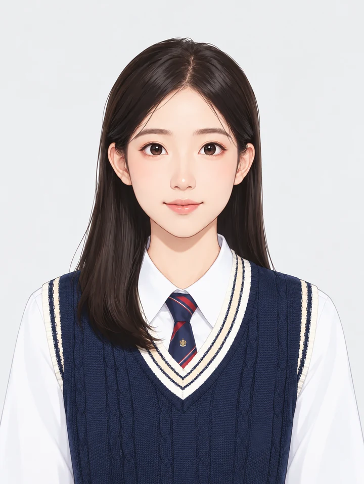

Shenzhen University
Xiaoqi Guo郭晓琪
Master’s Student in Artificial Intelligence
College of Computer Science and Software Engineering
Computer Vision Institute
My research focuses on medical image analysis, particularly medical image segmentation and multimodal representation learning. I am also interested in multimodal large language models for medical applications and LLM fine-tuning.
